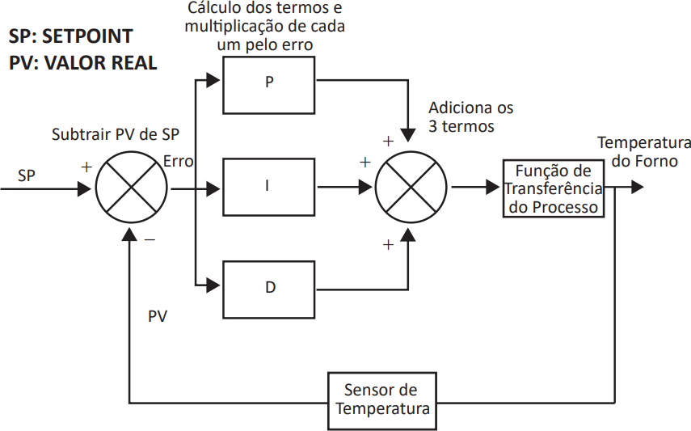

Proporcional-Integral-Derivativo (PID) é o algoritmo de controle que mais tem sido utilizado na indústria e no mundo para sistemas de controle industrial. A popularidade de controladores PID pode ser parcialmente atribuída ao seu desempenho robusto em uma ampla gama de condições de funcionamento e parcialmente à sua simplicidade funcional, que permite aos engenheiros operá-los de forma simples e direta.
Disponível em: https://www.ni.com/pt-br/innovations/white-papers/06/pid-theory-explained.html. Acesso em 20 jun. 2019 (adaptado).
A figura a seguir apresenta um esquema de controle PID para um processo de temperatura de um forno industrial.

Considere o trecho incompleto do código-fonte a seguir em que kp é o ganho proporcional (P),
ki o ganho integral (I) e kd o ganho derivativo (D).
1 double ITerm = 0, lastErro = 0;
2 int lastTime = 0;
3 double Compute(int sampleTime, double kp, double ki, double kd, double SP, double PV)
4 {
5 unsigned long now = millis();
6 int timeChange = (now - lastTime);
7 if (timeChange >= sampleTime)
8 {
9 double Erro = SP - PV;
10 ITerm += Erro * sampleTime;
11 double dErro = (Erro - lastErro);
12 double output = _______________
13 lastErro = Erro;
14 lastTime = now;
15 }
16 return output;
17 }
Considerando a necessidade de implementar o esquema de controle PID, assinale a opção que completa corretamente a linha 12 desse código.
kp * Erro + ki * ITerm;
ki/kp * ITerm + kd/kp * dErro;
kp * Erro + kd * dErro * dErro;
kp * Erro + ki * ITerm + kd * dErro;
kp * Erro + ki * ITerm + kd * dErro * dErro;